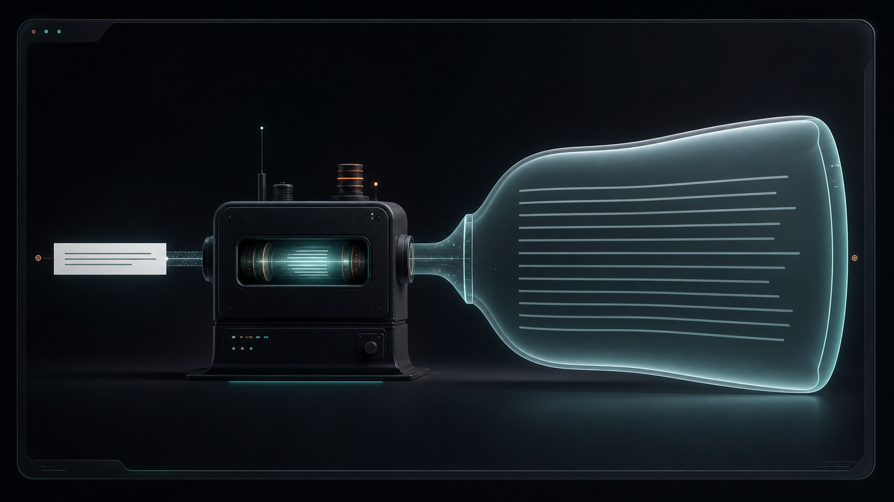

engine v10
Narrative infrastructure for modern teams
Turn perfectly normal sentences into board-approved AI gravity.
Paste mundane text. Select a transformation style. Receive a maximally confident, abstract, lengthened artifact that preserves the original meaning while radiating funded inevitability.
Backed by vibes
0 patents pending
SOC 2 adjacent

LIVE MODEL OUTPUT
We are operationalizing semantic surplus through a venture-native confidence layer.
Confidence allocated across every clause.
Input
Mundane text
Enterprise-ready theater
The only platform purpose-built to add length without adding accountability.
Agentic
Composable
Outcome-aligned
Paradigm-safe
AI-native
Roadmap-positive